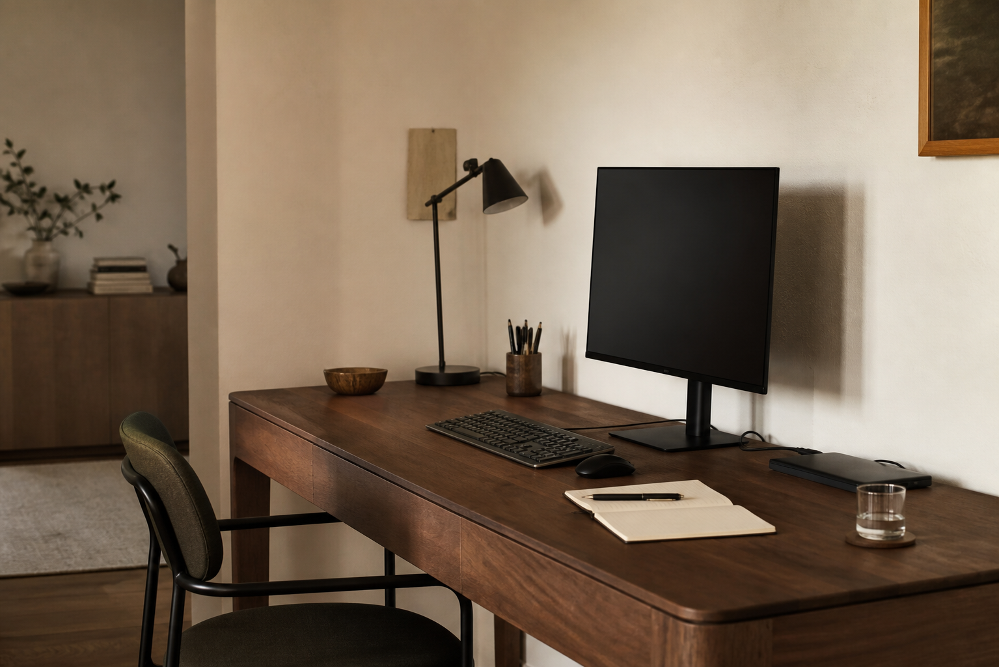

Roundup 01 · Premium workspace
15 Premium Desk Accessories That Actually Cut Clutter
A calmer desk is built in layers: clear the cables, lift what you use, and give every everyday item a home. These are the considered upgrades that make a workspace look intentional, with the tradeoffs before the buy button.

{kind=link}
Affiliate disclosure: As an Amazon Associate, Desk Atlas earns from qualifying purchases. Product prices and availability are determined on Amazon and are subject to change. We select products for their usefulness and explain who should skip them.
Not sure which category fits? Browse all desk organizers on Amazon
Quick answer
Start with the clutter you can remove.If your desk looks busy, begin with cable storage, a charging station and one vertical organizer. If it feels cramped, reclaim the surface with a monitor arm or laptop stand before adding more storage.
The visible foundation
Start with pieces that organize the desk while also looking like they belong there.

Oakywood Desk Shelf Mini · Walnut
A compact walnut shelf that raises a monitor or laptop while creating a second level for the small things that otherwise spread across the desk.
Tradeoff You're paying for materials and design as much as the basic shelf function, and the Mini has less storage than a full-size shelf.
BenQ e-Reading Desk Lamp · Matte Blue
A wide-area lamp that keeps task lighting off the main working surface while offering adjustable brightness, color temperature and smart dimming.
Tradeoff It's a substantial, expensive lamp; on a small desk or already-bright room, the size and price can be difficult to justify.

A heavy aluminum 75% keyboard that feels more like a piece of hardware than a disposable office accessory, with wireless connectivity and deep customization.
Tradeoff The enthusiast-grade features and 8K polling are overkill for ordinary office work, and the board is substantial on a smaller desk.
Logitech MX Master 3S · Graphite
The sensible luxury upgrade: quiet clicks, MagSpeed scrolling and programmable controls in a graphite finish that works with a modern setup.
Tradeoff It's large and right-handed, so it won't suit everyone who prefers a lighter or symmetrical mouse.
Orbitkey Desk Mat · Stone, Large
Defines the working zone while adding a hidden document compartment and magnetic cable holder, turning the desk surface itself into an organization layer.
Tradeoff The Large mat needs a generous desk; if you don't use its storage and cable features, part of the premium is wasted.
Hide the technology
The fastest route to a premium-looking desk is often moving the messy parts out of sight.
Anker Prime 3-in-1 Qi2.2 Charging Station
One compact charging footprint handles a phone, Apple Watch and earbuds while adding a smart display and active cooling.
Tradeoff It's expensive for a charger and its watch charging feature is aimed at the Apple ecosystem.
Univivi 36-inch No-Drill Under-Desk Cable Management Tray
Hides the power strip, adapters and cable bundle beneath the desk, with clamp or screw mounting so you can avoid drilling on suitable desks.
Tradeoff The fabric tray is practical rather than furniture-like, and the clamps need enough clearance at the desk edge.
UPERGO Walnut Headphone Stand with Storage Base
Gets headphones off the desktop while giving controllers, chargers or other small accessories a home in the walnut base.
Tradeoff It's a bigger footprint than a simple headphone hook, so the extra storage only earns its space if you'll use it.
Under-Desk Slide-Out Carbon-Steel Drawer
Turns unused space beneath the desktop into hidden storage for notebooks, accessories and everyday essentials while helping with cable management.
Tradeoff Check desk clearance, frame geometry and legroom before buying; the drawer is a substantial under-desk component.
Reclaim the desk surface
The best premium setups use the vertical plane so the working surface stays open.
Ergotron LX Pro Premium Single Monitor Arm · White
Replaces the factory monitor stand, freeing the footprint beneath the screen and giving you more control over height, tilt, rotation and position.
Tradeoff Check your monitor's VESA pattern and weight, plus your desk's thickness and clamp clearance, before buying.
Lenovo Portable Aluminum Laptop Stand
An understated aluminum stand that lifts a laptop off the desk and creates a cleaner secondary-screen arrangement while folding flat for portability.
Tradeoff It's fixed-height rather than highly adjustable, so it works best when your desk setup stays consistent.
ULTRARM Moodular Wooden Monitor Stand · Walnut, 45.6-inch
A wide walnut workstation shelf that creates a second level for monitors and accessories, with optional modules that can be positioned around the setup.
Tradeoff At roughly 45.6 inches wide, it's for a substantial desk; the modular accessories also add to the total cost.
Build the workstation around you
Once the desk surface is under control, spend on the hardware that improves the way you actually work.
Audioengine HD4 Powered Bookshelf Speakers · Black
Proper stereo speakers that can make a desk feel like a listening space rather than a computer station, with Bluetooth and wired connectivity.
Tradeoff The cabinets are substantial, so they consume meaningful desk space compared with compact desktop speakers.
Logitech MX Brio Ultra HD 4K Webcam · Graphite
A compact 4K webcam for a work-from-home or creator desk, with autofocus, adjustable framing and automatic light correction.
Tradeoff It's overkill for occasional calls, and a cheaper 1080p webcam may be the better value for basic meetings.
Herman Miller Aeron Ergonomic Chair · Size B, Graphite
The largest upgrade in the list: a premium ergonomic chair that treats the workspace as a complete system rather than just a collection of desk accessories.
Tradeoff It's a major investment and sizing matters; check Herman Miller's size guidance before choosing Size B.
Before you buy
Choose the fix, not the aesthetic.
Desk looks busy? Start below the surface with the cable tray, then add one shelf or mat.
Desk feels cramped? Move your monitor or laptop upward before adding storage.
Desk feels uncomfortable? Prioritize screen height and seating over a decorative upgrade.
If you only buy three
- Oakywood Desk Shelf Mini The quickest visual upgrade for a desk that needs order, not more storage bins.
- Univivi cable tray The highest-impact fix when cords make an otherwise good setup feel unfinished.
- Ergotron LX Pro The smart upgrade when your monitor stand consumes the space you actually need.
Prices and availability change often on Amazon. Before purchasing, check the live listing for current price, specifications, size and compatibility.